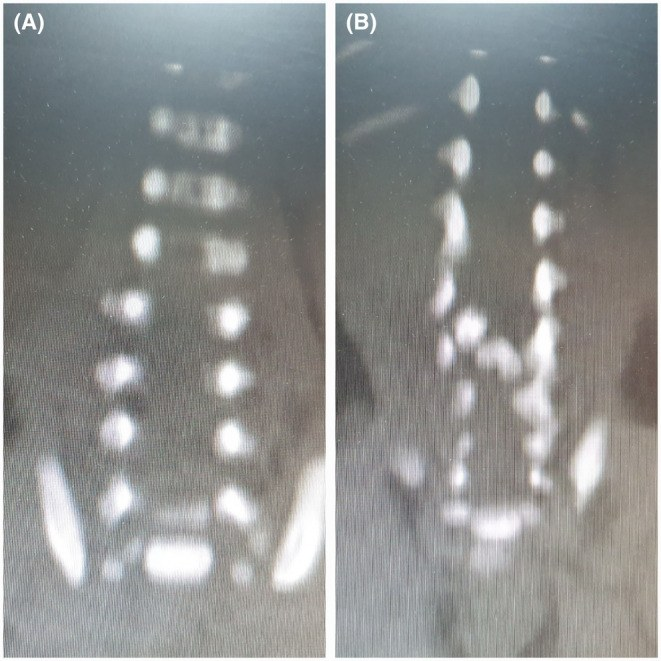
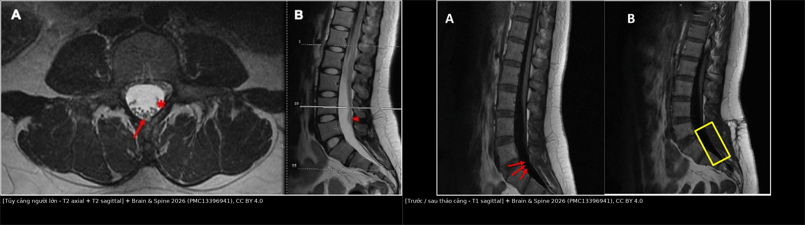
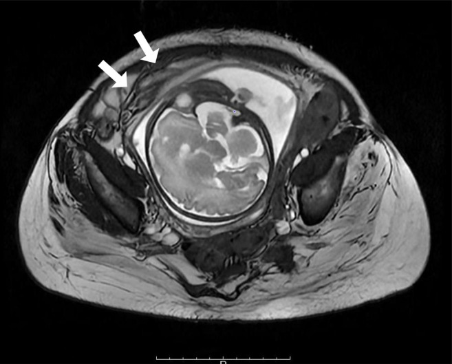
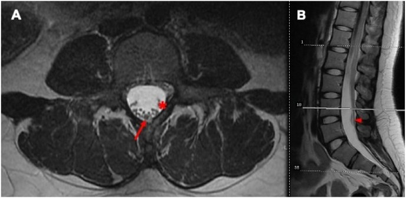
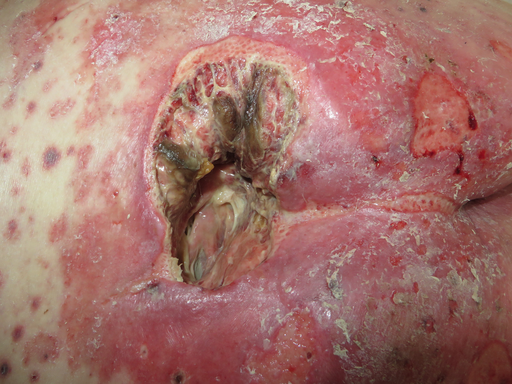

673 — Chuyển tiếp sang người lớn ở spina bifida & bàng quang thần kinh: theo dõi suốt đời, dị ứng latex, loét tì đè, sức khỏe sinh sản & tủy căng / Transition to adulthood in spina bifida
Tags: pattern:chuyen-tiep vung:tiet-nieu vung:tuy-cot-song protocol:MRI-cot-song score:TRAQ-SB anatomy:bang-quang-than-kinh
Mức chắc chắn (certainty): tổng hợp y văn (literature synthesis) — hướng dẫn EAU/ESPU 2026 + cohort chuyển tiếp + ca minh họa có ảnh CC; ghi PMCID từng ảnh và từng con số.
1. Tổng quan bệnh học – cơ chế hình ảnh
- Spina bifida (SB) / myelomeningocele (MMC) là dị tật ống thần kinh; nhờ phẫu thuật sớm, đa số trẻ sống tới tuổi trưởng thành. Đây không còn là “bệnh nhi” mà là bệnh mạn suốt đời với bàng quang thần kinh, ruột thần kinh, não úng thủy, tủy căng, biến dạng cột sống, loét tì đè và các vấn đề sinh sản.
- Chuyển tiếp (health care transition — HCT) là một quá trình phát triển, không phải một lần “chuyển hồ sơ”: bắt đầu từ 12–14 tuổi, tập kỹ năng tự quản lý, rồi chuyển sang người lớn khoảng 18–21 tuổi tùy mức sẵn sàng. Trong khảo sát 20 trung tâm tại Mỹ, chỉ 15% đã triển khai đầy đủ quy trình, 40% theo dõi được việc chuyển tiếp thành công; rào cản lớn nhất là thiếu bác sĩ người lớn, bảo hiểm và giao thông (Hopson 2026, PMC12859455).
- Vì sao phải theo dõi suốt đời: suy thận do bàng quang thần kinh vẫn là nguyên nhân tử vong thường gặp và có thể đến đột ngột; nhiễm trùng tiểu, sỏi, trào ngược và áp lực bàng quang cao là các con đường dẫn tới sẹo thận (Starowicz 2021, PMC8633437). Trong một chương trình chuyển tiếp, 86% bệnh nhân có vấn đề điều phối chăm sóc, 70% có vấn đề bàng quang thần kinh, 42% có vấn đề ruột thần kinh, 31% có vấn đề da, 30% có vấn đề sức khỏe sinh sản/tình dục (PMC8633437).
- Tủy căng (tethered cord syndrome — TCS): tủy bị kéo cố định, thường do lipomyelomeningocele, dây tận cùng dày/mỡ, dính sau mổ. Chóp tủy bình thường ở người lớn L1–L2; chóp dưới L2 và dây tận cùng > 2 mm là bất thường (bài 656). Trên MRI, mô mỡ của dây tận cùng T1 sáng, tắt tín hiệu khi fat-sat; tủy nằm thấp, rễ thần kinh bị kéo lệch. TẠI SAO có triệu chứng: lực căng cơ học làm giảm tưới máu tủy → đau lưng/đau chân, yếu, rối loạn tiểu–đại tiện, vẹo cột sống tiến triển.
- Não úng thủy và shunt: shunt rối loạn có thể biểu hiện đau đầu, nôn, lơ mơ, thay đổi tri giác hoặc chỉ đau bụng. CT/MRI đánh giá kích thước não thất so với phim nền; X-quang shunt series tìm đứt/gãy/di trú. Ở người lớn, đau đầu mạn và suy giảm nhận thức có thể là dấu hiệu shunt hoạt động kém.
- Dị ứng latex (latex allergy): do phơi nhiễm lặp lại qua phẫu thuật, catheter, găng tay. Tỷ lệ nhạy cảm latex ở trẻ SB 26–47,9%; khi áp dụng môi trường không latex từ lúc sinh, tỷ lệ giảm từ 26,7% xuống 4,5% (Arasi 2023, PMC10779698). Đây là dị ứng IgE thật, có thể sốc phản vệ — không phải “kích ứng da”.
- Loét tì đè (pressure injury): do mất cảm giác + liệt + ngồi/ nằm lâu + biến dạng khung chậu. Tỷ lệ loét tì đè ở trẻ nói chung 0,47–31,2% tùy bối cảnh; ở người SB, 31% báo có vấn đề da trong chương trình chuyển tiếp (PMC13292696, PMC8633437). Loét sâu có thể không đau, dẫn tới viêm xương tủy, nhiễm trùng huyết.
- Sức khỏe sinh sản: phụ nữ SB thường có khả năng sinh sản bình thường nhưng mang thai là thai kỳ nguy cơ cao: nhiễm trùng tiểu, sinh non, mổ lấy thai, tư vấn acid folic và di truyền. Trong 11 phụ nữ có tiền sử tái tạo bàng quang, 18 lần sinh có 14 lần mổ lấy thai, 5/11 thai kỳ không dự phòng có nhiễm trùng tiểu có triệu chứng (Porela-Tiihonen 2024, PMC11605474).
- TẠI SAO hình ảnh thay đổi:
- MRI tủy: T1/T2 cho giải phẫu (chóp tủy, dây tận cùng, mỡ, syrinx); không cần gadolinium cho chẩn đoán tủy căng đơn thuần. Dính sau mổ có thể ngấm thuốc và giả u, nên chẩn đoán dựa vào hình thái + triệu chứng, không chỉ tín hiệu.
- CT sọ: xương sọ và não thất; liều thấp ở người trẻ; MRI tốt hơn cho mô não và shunt programmable (từ trường có thể đổi cài đặt van).
- MRI cột sống thắt lưng cùng: STIR/T2 fat-sat làm nổi phù tủy, mỡ, dịch; T1 phân biệt mỡ với máu/dịch.
- Loét/viêm xương tủy: MRI STIR/T2 tăng tín hiệu tủy xương, ngấm thuốc viền, đường rò; CT thấy phá hủy vỏ xương muộn hơn; X-quang thường bình thường sớm.
- Thận: siêu âm thấy ứ nước, mỏng nhu mô, sẹo; DMSA xác định sẹo; creatinine/cystatin C đánh giá chức năng.
2. Mẫu hình + chẩn đoán phân biệt theo hệ cơ quan (gamut)
- Tiết niệu: nhiễm trùng tiểu tái phát, sỏi bàng quang/thận, trào ngược, ứ nước, bàng quang áp lực cao, suy thận, biến chứng sau tái tạo bàng quang.
- Thần kinh – cột sống: tủy căng/tái căng, shunt rối loạn, syringomyelia, Chiari, động kinh, đau lưng cơ học.
- Cơ – xương: vẹo cột sống, trật khớp háng, gãy xương do loãng xương, biến dạng bàn chân, loét tì đè.
- Da – dị ứng: viêm da tiếp xúc, dị ứng latex, loét do tì đè, nhiễm trùng vết mổ, viêm xương tủy.
- Tiêu hóa: ruột thần kinh, táo bón, đại tiện không tự chủ, tắc ruột do dính.
- Sinh sản – tình dục: rối loạn cương, khô âm đạo, giảm ham muốn, vô sinh, thai kỳ nguy cơ cao, tránh thai.
- Tâm lý – xã hội: trầm cảm, lo âu, cô lập, phụ thuộc người chăm sóc, thất nghiệp.
- Tim mạch – tự chủ: rối loạn tự chủ (autonomic dysreflexia) ở tổn thương trên T6, tăng huyết áp, béo bụng, hội chứng chuyển hóa, ngưng thở khi ngủ.

MRI cột sống thắt lưng cùng ở trẻ sơ sinh có búi lông: (A) khuyết đốt sống/spina bifida; (B) đôi tủy (diastematomyelia) và tủy căng — chẩn đoán sớm để tránh di chứng thần kinh–tiết niệu khi trưởng thành. Nguồn: Farhadi R, Kazemi SA, Godazandeh F, Clin Case Rep 2024;12:e9267 (PMC11362022), Fig. 3, CC BY-NC 4.0 — giữ nguyên bản.3. Bảng so sánh phân biệt (ma trận đối chiếu)
| Thực thể (entity) | Hình ảnh/lâm sàng điển hình | Chốt vào (rule-in) | Chốt loại (rule-out) | Gợi ý xác nhận |
|---|---|---|---|---|
| Tủy căng/tái căng | Đau lưng–chân tiến triển, yếu, rối loạn tiểu; MRI chóp dưới L2, dây tận cùng > 2 mm, mỡ, tủy dính | Triệu chứng mới + chóp tủy thấp/dây dày + thay đổi so phim nền | MRI bình thường + triệu chứng không tương ứng → tìm nguyên nhân khác | MRI toàn bộ tủy có/không gadolinium; so phim cũ |
| Shunt rối loạn | Đau đầu, nôn, lơ mơ, đau bụng; não thất giãn hơn trên CT/MRI so phim nền | Thay đổi kích thước não thất + triệu chứng tăng áp lực nội sọ | Não thất không đổi + không triệu chứng → ít nghĩ shunt | CT liều thấp/MRI; X-quang shunt series |
| Syringomyelia | Rối cảm giác ly khai (cape-like), yếu tay, đau; MRI khoang dịch trong tủy | Khoang syrinx trên T2 + triệu chứng tủy | Không có khoang dịch → không phải syrinx | MRI T1/T2 toàn bộ tủy |
| Loét tì đè | Vùng cùng cụt/ụ ngồi, không đau, hoại tử, chảy dịch; sâu tới cơ/xương | Mất cảm giác + vùng tì đè + tổn thương sâu | Da nguyên vẹn, không tì đè → không phải loét | Khám da toàn thân; chụp/MRI khi nghi sâu |
| Viêm xương tủy dưới loét | Loét sâu, lộ xương, chảy mủ, sốt; MRI phù tủy xương + ngấm thuốc, CT phá hủy xương | Loét + lộ xương + MRI/CT phá hủy xương | MRI bình thường + không lộ xương → ít nghĩ viêm xương | MRI có gadolinium; sinh thiết xương |
| Dị ứng latex | Ngứa, mày đay, phù, co thắt phế quản, sốc sau tiếp xúc găng/catheter | Triệu chứng IgE sau tiếp xúc + tiền sử phẫu thuật nhiều lần | Chỉ kích ứng da khu trú, không toàn thân → viêm da tiếp xúc | Test IgE đặc hiệu; môi trường không latex |
| Suy thận do bàng quang áp lực cao | Creatinin tăng, siêu âm ứ nước/mỏng nhu mô, bàng quang dày; urodynamics áp lực cao | Áp lực bàng quang cao + ứ nước/sẹo thận | Áp lực bình thường, không ứ nước → tìm nguyên nhân khác | Urodynamics, US, DMSA |
| Rối loạn tự chủ | Tăng huyết áp kịch phát, nhịp chậm, vã mồ hôi, đau đầu khi bàng quang căng/táo bón/loét | HA tăng + kích thích tạng + tổn thương trên T6 | Sốt + hạ HA + ổ nhiễm → sốc nhiễm trùng | Đo HA, làm rỗng bàng quang, tìm ổ kích thích |
| Thai kỳ ở bàng quang tái tạo | Thai phát triển, tử cung đè bể chứa; MRI thấy cuống mạch/bể chứa bị đẩy | Có thai + tiền sử tái tạo bàng quang | Ứ nước sinh lý nhẹ, không sốt → theo dõi | US thai + US thận; MRI không gadolinium khi cần |
Dấu hiệu chốt cần đọc đúng
- Tủy căng là chẩn đoán lâm sàng–hình ảnh: chóp tủy thấp đơn thuần có thể gặp ở người không triệu chứng; đừng mổ chỉ vì hình ảnh. Ngược lại, triệu chứng tiến triển + thay đổi so phim nền đủ để hội chẩn dù hình ảnh “chưa rõ”.
- Shunt và tủy căng có thể cùng tồn tại; đau đầu + nôn + thay đổi não thất ưu tiên shunt; đau lưng + yếu chi + rối loạn tiểu ưu tiên tủy.
- Loét tì đè ở người mất cảm giác có thể không đau — hỏi về sốt, chảy mủ, mùi hôi, và thăm khám toàn bộ da mỗi lần nhập viện.
- Dị ứng latex không được “premedicate rồi dùng latex”: biện pháp chính là loại bỏ latex hoàn toàn khỏi phòng chụp/phòng mổ.

Trái: (A) axial T2 — dây tận cùng dày, rễ thần kinh bị đẩy; (B) sagittal T2 — chóp tủy thấp, dây tận cùng mỡ. Phải: (A) T1 sagittal trước mổ — tủy bám thấp (mũi tên đỏ); (B) sau tháo căng — tủy được giải phóng (khung vàng). Nguồn: McGinley C et al., Brain & Spine 2026;6:106177 (PMC13396941), Fig. 2 và Fig. 3, CC BY 4.0; ảnh ghép letterbox.4. Protocol chụp + hệ phân độ/điểm chuẩn hóa
- Lộ trình chuyển tiếp (transition pathway):
- 12–14 tuổi: bắt đầu trao đổi, đánh giá mức sẵn sàng bằng TRAQ-SB (công cụ được 65% trung tâm dùng trong khảo sát 2026), dạy tự CIC, tự quản lý thuốc, nhận biết dấu hiệu nguy hiểm.
- 15–17 tuổi: lập kế hoạch chuyển tiếp bằng văn bản, giới thiệu bác sĩ người lớn, chuyển hồ sơ hình ảnh, tư vấn nghề nghiệp/sinh sản.
- 18–21 tuổi: chuyển sang phòng khám người lớn đa chuyên khoa (niệu–thần kinh–phục hồi chức năng–nội tiết–tâm lý); không chỉ “gửi hồ sơ”.
- Theo dõi định kỳ gợi ý (lifelong):
- Hằng năm: huyết áp, cân nặng, urinalysis, creatinine/eGFR hoặc cystatin C, siêu âm thận–bàng quang, khám da, đánh giá ruột/bàng quang, tư vấn sinh sản.
- Định kỳ: urodynamics khi có triệu chứng hoặc thay đổi thần kinh; MRI tủy khi đau lưng/yếu/rối loạn tiểu mới; CT/MRI sọ khi nghi shunt; DEXA khi có yếu tố nguy cơ loãng xương.
- Sau tái tạo bàng quang: theo dõi B12, khí máu, siêu âm, nội soi sau 10 năm (xem bài 672).
- Protocol hình ảnh:
- MRI tủy toàn bộ (sagittal T1, T2, STIR; axial T2 lát mỏng qua chóp/tổn thương) — không cần gadolinium cho tủy căng; dùng gadolinium khi nghi u/viêm hoặc dính sau mổ.
- CT sọ liều thấp cho shunt; MRI sọ nếu cần đánh giá mô não hoặc van programmable (kiểm tra lại cài đặt sau MRI).
- Siêu âm thận–bàng quang là tuyến đầu; CT KUB khi nghi sỏi; DMSA khi cần xác định sẹo.
- Thai kỳ: siêu âm là chính; MRI 1,5 T không gadolinium khi cần đánh giá bể chứa/khối; tránh CT trừ khi tối cần.

MRI axial T2 trong thai kỳ ở người có ileocystoplasty: tử cung và thai chiếm phần lớn ổ bụng; cuống mạch/bể chứa bị đẩy ra trước (mũi tên). Đây là lý do cần phối hợp niệu–sản và ưu tiên MRI không gadolinium. Nguồn: Sato A et al., Int J Urol 2026;33(3):458-461 (PMC12957717), Fig. 2, CC BY-NC 4.0 — giữ nguyên bản.- Phân độ/điểm: TRAQ-SB cho mức sẵn sàng chuyển tiếp; Clavien–Dindo cho biến chứng can thiệp; phân độ loét tì đè theo NPUAP/EPUAP (độ 1–4, không phân độ được nếu nền hoại tử).
Sơ đồ lộ trình chuyển tiếp:
flowchart TD
A[Trẻ spina bifida 12–14 tuổi] --> B[Đánh giá TRAQ-SB + tự CIC + nhận biết cờ đỏ]
B --> C{Đã sẵn sàng tự quản lý?}
C -->|Chưa| D[Tiếp tục huấn luyện + hỗ trợ gia đình]
D --> B
C -->|Có| E[Lập kế hoạch chuyển tiếp 15–17 tuổi]
E --> F[Giới thiệu phòng khám người lớn đa chuyên khoa]
F --> G[Chuyển hồ sơ + hình ảnh + đơn thuốc + kế hoạch sinh sản]
G --> H[Theo dõi suốt đời: thận, bàng quang, da, tủy, shunt, tâm lý]
5. Biến thể bình thường và cạm bẫy
- Chóp tủy thấp đơn thuần có thể là biến thể không triệu chứng; không mổ chỉ vì chóp dưới L2. Ngược lại, MRI “bình thường” không loại trừ tủy căng chức năng nếu triệu chứng điển hình.
- Dính sau mổ ngấm thuốc và dày màng cứng có thể giả u/tái căng; so sánh phim nền và đối chiếu triệu chứng.
- Shunt programmable có thể bị đổi cài đặt sau MRI — kiểm tra và cài lại sau chụp.
- Loét tì đè: tổn thương sâu có thể nhỏ ngoài da nhưng rộng dưới da; không đánh giá độ sâu bằng mắt. Nghi viêm xương tủy khi lộ xương, chảy mủ kéo dài, sốt — cần MRI/CT và sinh thiết.
- Dị ứng latex: không có “tiền mê rồi dùng latex”; phải dùng môi trường không latex từ khâu đón tiếp. Hỏi kỹ dị ứng trái cây (latex-fruit syndrome).
- Thai kỳ: ứ nước thận sinh lý do tử cung chèn ép thường nhẹ và không sốt; đau hông + sốt + ứ nước tăng phải loại trừ sỏi/nhiễm trùng/tắc. Ở bàng quang tái tạo, tử cung có thể đè/làm xoắn cuống mạch — cần bác sĩ niệu và sản phối hợp.
- Rối loạn tự chủ có thể bị nhầm với tiền sản giật ở thai phụ (tăng huyết áp, đau đầu) hoặc nhiễm trùng huyết; tìm và loại bỏ kích thích bàng quang/trực tràng/da trước khi quy cho nguyên nhân khác.
6. Tự lượng giá — Blind Quiz
Ca 1 — Nữ 27 tuổi, spina bifida thể kín, đau lưng–chân tiến triển và nhiễm trùng tiểu tái phát. Xem MRI axial T2.

- Hỏi: bất thường chính? Chẩn đoán? Vì sao nhiễm trùng tiểu tái phát?
Bấm để hiện đáp án (findings + chẩn đoán)
- Findings: dây tận cùng dày (mũi tên đỏ) và rễ thần kinh đuôi ngựa bị đẩy lệch (mũi tên đỏ đứt) trong ống sống thắt lưng; hình sagittal kèm theo cho thấy chóp tủy thấp.
- Chẩn đoán: tủy căng ở người lớn (adult tethered cord syndrome) do dây tận cùng mỡ dày trên nền spina bifida occulta.
- Liên hệ: rối loạn thần kinh bàng quang do tủy căng gây ứ nước tiểu, nhiễm trùng tái phát; tháo căng vi phẫu cải thiện đau và ngừng nhiễm trùng ở ca này.
- Nguồn ảnh: McGinley C et al., Brain & Spine 2026;6:106177 (PMC13396941), Fig. 2, CC BY 4.0.
Ca 2 — Trẻ sơ sinh có búi lông vùng thắt lưng cùng, được chụp MRI.
- Hỏi: các bất thường? Vì sao phải theo dõi tới tuổi trưởng thành?
Bấm để hiện đáp án (findings + chẩn đoán)
- Findings: (A) khuyết cung sau đốt sống (spina bifida); (B) đôi tủy (diastematomyelia) và tủy căng với chóp tủy thấp.
- Chẩn đoán: dị tật tủy kín phức tạp — búi lông là dấu hiệu da chỉ điểm.
- Vì sao theo dõi suốt đời: nguy cơ tủy căng tái phát, rối loạn tiểu–đại tiện, biến dạng cột sống; cần MRI khi có triệu chứng mới, theo dõi bàng quang–thận và chuyển tiếp sang người lớn.
- Nguồn ảnh: Farhadi R, Kazemi SA, Godazandeh F, Clin Case Rep 2024;12:e9267 (PMC11362022), Fig. 3, CC BY-NC 4.0 — giữ nguyên bản.
Ca 3 — Bệnh nhân trưởng thành spina bifida, ngồi xe lăn, nhập viện vì sốt và chảy mủ vùng cùng cụt; vùng loét không đau (ca minh họa, ảnh minh họa tổn thương).

- Hỏi: mô tả tổn thương? Biến chứng cần tìm? Hình ảnh nào cần làm?
Bấm để hiện đáp án (findings + chẩn đoán)
- Findings: loét sâu vùng cùng cụt, đáy có mô hoại tử/mủ, viền da macerated; tổn thương vượt quá lớp dưới da, nguy cơ lộ cơ/xương.
- Chẩn đoán: loét tì đè sâu (độ 3–4) có nhiễm trùng; ở người mất cảm giác có thể không đau.
- Biến chứng cần tìm: viêm xương tủy cùng cụt, nhiễm trùng huyết, áp-xe vùng chậu. Hình ảnh: MRI khung chậu có gadolinium (phù tủy xương, ngấm thuốc viền, đường rò) hoặc CT khi MRI không khả dụng; X-quang ít nhạy.
- Xử trí: cắt lọc, kiểm soát nhiễm trùng, giảm áp lực, dinh dưỡng, tư vấn phòng ngừa tái phát.
- Nguồn ảnh: AfroBrazilian, Wikimedia Commons, CC BY-SA 4.0 — ảnh nguyên bản.
Bài liên quan chéo
- 600 – Tổng quan Nhi khoa
- 656 – Bất thường tủy–cột sống kín ở trẻ (tủy căng, đôi tủy, u mỡ)
- 668 – Theo dõi dài hạn sau tháo căng tủy & bàng quang thần kinh
- 671 – Nhiễm trùng tiểu & viêm thận–bể thận ở trẻ có bàng quang thần kinh
- 672 – Biến chứng muộn sau tái tạo bàng quang bằng ruột
- 642 – Theo dõi & biến chứng dài hạn sau chấn thương đường tiết niệu dưới ở trẻ
Ảnh
images/673_tuy-cang_MRI_PMC13396941-F2-CCBY.jpg— tủy căng người lớn, CC BY 4.0.images/673_tuy-cang_MRI_PMC13396941-F3-CCBY.jpg— trước/sau tháo căng, CC BY 4.0.images/composite_tuy-cang-nguoi-lon.jpg— ảnh ghép từ hai ảnh trên, CC BY 4.0.images/673_spina-bifida_MRI_PMC11362022-F3-CCBYNC.jpg— đôi tủy/tủy căng, CC BY-NC 4.0 (nguyên bản).images/673_loet-ty-de_Anh_Commons-AfroBrazilian-CCBYSA40.jpg— loét tì đè, CC BY-SA 4.0.images/673_thai-ky_MRI_PMC12957717-F2-CCBYNC.jpg— MRI thai kỳ sau ileocystoplasty, CC BY-NC 4.0 (nguyên bản).
Nguồn và giấy phép từng ảnh: images/CREDITS.md.
Không dùng để chẩn đoán độc lập khi chưa có người hướng dẫn.